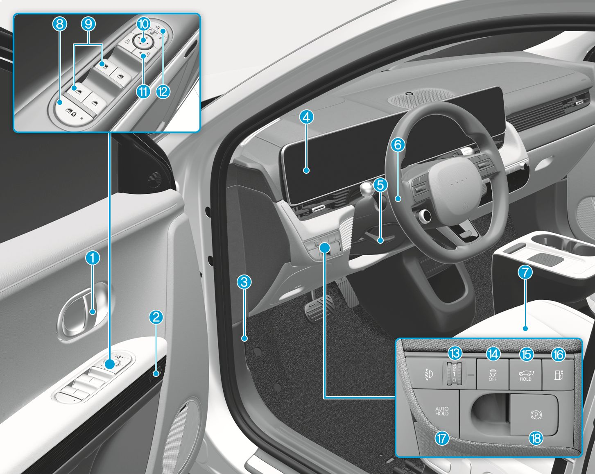

도어 조작 버튼 및 스티어링 휠 주변부

1C_SideInsideVehicleOverview
- 도어 열림 레버(실내) 차량 내부에서 잠금/잠금 해제
- 운전 자세 메모리 시스템 운전석 자세 메모리 시스템 사용하기
- 후드 열림 레버 후드 열기
- 클러스터 사이드 마그네틱 패널 클러스터 사이드 마그네틱 패널
- 스티어링 휠 위치 조절 레버 스티어링 휠 위치 조절하기
- 스티어링 휠 스티어링 휠 사용하기
- 시트 시트 조작부 명칭
- 유리창 열림/닫힘 잠금 버튼/전자식 차일드 락 버튼 뒷좌석 유리창 열림/닫힘 잠금 버튼, 전자식 차일드 락
- 유리창 열림/닫힘 버튼 유리창 열림/닫힘 장치
- 사이드 미러 조절 스위치 사이드 미러
- 중앙 도어 잠금/잠금 해제 버튼 차량 내부에서 잠금/잠금 해제
- 사이드 미러 접이 버튼 사이드 미러
- 전조등 각도 조절 스위치 전조등 조사 각도 조절하기
- 차체 자세 제어(ESC) OFF 버튼 차체 자세 제어(ESC)
- 파워 테일게이트 열림/닫힘 버튼 파워 테일게이트 열고 닫기
- 충전도어 열림/닫힘 버튼 전동식 충전 도어 열고 닫기
- 자동 정차 기능(Auto Hold) 버튼 자동 정차(Auto Hold)
- 전자식 파킹 브레이크(EPB) 스위치 주차 브레이크(EPB)